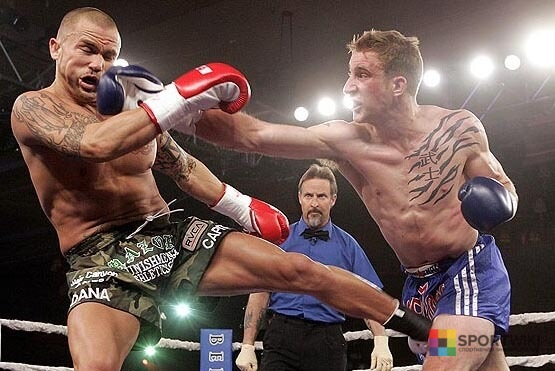

Родиной кикбоксинга считается США и Западная Европа, а годом рождения — 60-70-е года двадцатого столетия. Название спортивному направлению придумал Чак Норрис, его и принято называть «отцом» кикбоксинга. Первоначально кикбоксинг объединял каратэ и английский бокс. Чуть позже к нему присоединились техники тайского бокса и тхэквондо.
Уже в начале 70-х годов в США было создано множество школ, обучающих разным стилям единоборств. В связи с тем, что каждый вид боевого искусства имел свои правила и было невозможно представителям разных направлений состязаться между собой, было принято решение устроить общие соревнования. Первоначально такие состязания назывались All Style Karate либо Full Contact Karate.
Официальные соревнования с соблюдением всех правил по кикбоксингу были проведены в сентябре 1974 года. Спортсмены состязались в четырех весовых категориях.
На 1974 — 1985 года приходится активное развитие кикбоксинга в Америке и Европе. Чемпионаты и турниры проводились во многих странах и городах. А 1985 год считается годом зарождения женского кикбоксинга.
1990 — официальное признание кикбоксинга в СССР. Оно ознаменовалось созданием Всесоюзной Федерации кикбоксинга и вступлением в WAKO.
 назад